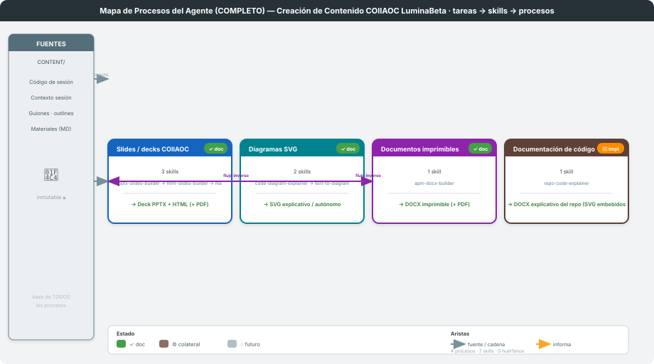
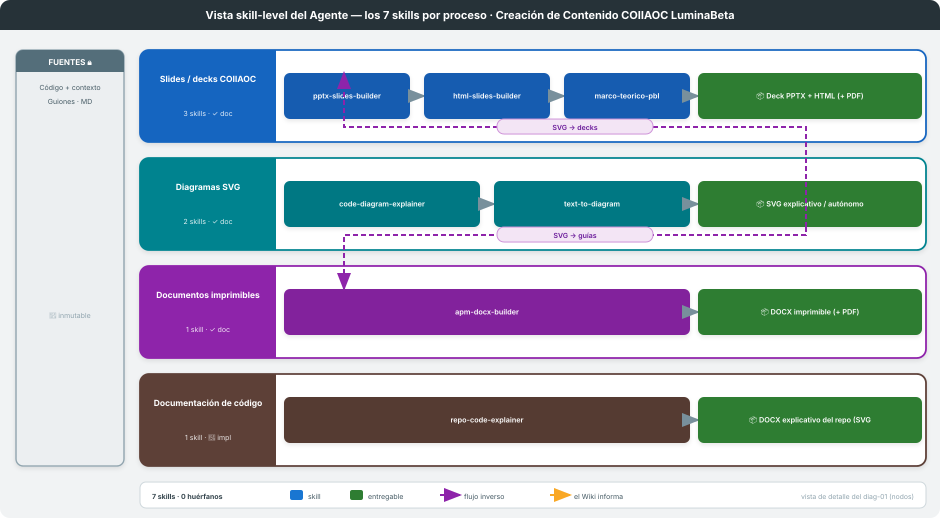

Arquitectura: Down-Top — tareas → skills → procesos
Última actualización: 2026-06-08
Documento maestro de nivel superior: cataloga los procesos del agente y cómo se relacionan. No describe cada proceso por dentro (eso vive en su
docs/proceso-<slug>/PROCESO.md); aquí se traza el mapa que los conecta.Catálogo derivado del análisis de
.claude/skills/README.md(3 familias) +proceso-codigo(documentación de código). Cada proceso tienePROCESO.md(build-single-process) y los dos SVG de este mapa los regeneramapa-procesos-agente(engine/gen_mapa.py). Lint actual: 4 procesos · 7 skills · 0 huérfanos.Límite del mapa. Este es la vista estructural y cubre los procesos locales de generación (skills instalados en
.claude/skills/). No modela: (a) los skills editoriales globales (lesson-from-source,authorship-validator,voice-refiner,atlas-slop-ai, en~/.claude/skills/), ni (b) el eje metodológico (Akademos multi-agente / producción directa). Esa casuística operativa vive en.claude/skills/USE-CASES.mdyREADME.md.

Las 3 primeras familias derivan de .claude/skills/README.md; proceso-codigo formaliza el pipeline
de documentación de código. Cada proceso tiene su PROCESO.md + serie SVG (build-single-process).
| # | Proceso | Slug / carpeta | Skills (en orden) | Entregable | Estado |
|---|---|---|---|---|---|
| 1 | Slides / decks | proceso-slides |
pptx-slides-builder · html-slides-builder · marco-teorico-pbl |
PPTX · HTML · PDF | ✓ documentado |
| 2 | Diagramas | proceso-diagramas |
code-diagram-explainer · text-to-diagram |
SVG | ✓ documentado |
| 3 | Documentos | proceso-documentos |
apm-docx-builder (+ globales pdf-export · word-template-gen) |
DOCX · PDF | ✓ documentado |
| 4 | Documentación de código | proceso-codigo |
repo-code-explainer (compone diagramas + documentos) |
DOCX (SVG embebidos) | 🔨 implementado |
html2pptxestá ARCHIVADO (no usar) → excluido del catálogo. Los skills globales (pdf-export,word-template-gen) viven en~/.claude/skills/, no en este repo.
(Fuente común, encadenamientos alimenta, informa, precede. El texto se concilia a mano;
los SVG los regenera mapa-procesos-agente.)
CONTENT/: código de
sesión + contexto + guiones/outlines), declarada en mapa.yaml.alimenta): los SVG de proceso-diagramas se incrustan
en decks (proceso-slides) y en guías/documentos (proceso-documentos).informa): proceso-codigo compone la gramática SVG de
proceso-diagramas y la infraestructura DOCX de proceso-documentos (las reutiliza, no las duplica).relaciones: de cada proceso origen.
| Skill | Proceso | Rol |
|---|---|---|
pptx-slides-builder |
Slides | guión JSON → PPTX y HTML (fuente única) |
html-slides-builder |
Slides | design system HTML + respaldo html_to_pptx.py |
marco-teorico-pbl |
Slides | 4 slides de marco teórico PBL (A–D) |
code-diagram-explainer |
Diagramas | código → SVG explicativo |
text-to-diagram |
Diagramas | texto/conceptos → SVG autónomo |
apm-docx-builder |
Documentos | material de curso → DOCX |
repo-code-explainer |
Documentación de código | repo → SVG por unidad → PNG → DOCX |
Invariante: sin skills huérfanos — cada skill de dominio cae en un proceso. Excepciones:
html2pptx (archivado), skills globales de usuario y los meta_skills del kit.
Cuando cambia un skill o un proceso, seguir un solo camino para que las tres vistas (estructural · operativa · visual) no diverjan:
SKILL.md del skill y el frontmatter de su docs/proceso-<slug>/PROCESO.md.python .claude/skills/mapa-procesos-agente/engine/gen_mapa.py → regenera los SVG + corre el lint
(«sin huérfanos»). Lint en verde es condición para dar el cambio por bueno..claude/skills/README.md y USE-CASES.md
(+ la hoja de _content-creation-map/ que aplique). Candidato a automatizar con repo-reconciler.El frontmatter es la fuente de verdad estructural; los SVG y las tablas son derivados.
Diagramas en svg/ (generados por mapa-procesos-agente). Config del agente en mapa.yaml.
Procesos individuales en docs/proceso-<slug>/PROCESO.md.